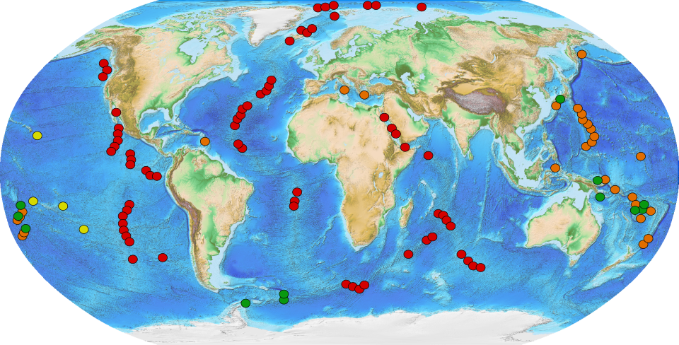

Global Hydrothermal Vent Distribution

Hydrothermal vents in the Western Pacific are concentrated along tectonic plate boundaries and back-arc basins.

Hydrothermal vents in the Western Pacific are concentrated along tectonic plate boundaries and back-arc basins.